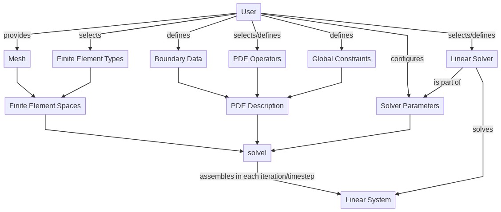

PDE Description
Purpose
The following flow chart visualizes the typical work flow for solving a PDE.

Central object is the PDEDescription which is given as a weak form of your problem (without time derivatives that are added separately by a TimeControlSolver) and usually does not need any information on the discretisation at this point (but of course can depend on region numbers).
Separately the user provides a mesh and selects suitable finite element spaces on it. The PDEDescription and the Finite Element information is passed to the solver which (after an inspection of all the problem features) descides on a solver strategy (directly or fixed-point). In each iteration a linear system of equations is assembled and then solved by a linear solver.
Automatic differentiation enters on the PDEDescription level. Nonlinear operators can be triggered to be differentiated automatically which causes during their assignment to the PDEDescription that the necessary terms for a Newton iteration (related to the partial derivatives with respect to each unknown and modifications to the right-hand side) automatically enter the PDEDescription, such that a call of solve! returns the next Newton iterate. (Fixed damping factors or function-based damping is also possible via optional arguments, but currently no lagged update of the derivatives.)
Also, if preferred or needed, a low-level assembly of the linear system is possible as each operator can be assembled separately.
Below the PDEDescription type is detailed. Its ingredients (PDEOperators, boundary conditions, global constraints) are explained on the next pages.
GradientRobustMultiPhysics.PDEDescription — Typemutable struct PDEDescription
name::String
equation_names::Array{String,1}
unknown_names::Array{String,1}
algebraic_constraint::Array{Bool,1}
LHS::Array{Array{AbstractPDEOperator,1},2}
RHS::Array{Array{AbstractPDEOperator,1},1}
BoundaryOperators::Array{BoundaryOperator,1}
GlobalConstraints::Array{AbstractGlobalConstraint,1}
endstruct that describes a PDE system with n equations and n unknowns
A PDE system is described by
- its name
- the names of its equations
- the names of its unknowns
- is the variable related to an algebraic constraint? (e.g. pressure in incompressible CFD, this has implications e.g. for the time discretisation)
- a size n x n array of Array{AbstractPDEOperator,1} LHS that describes the left-hand sides
- a length n array of Array{AbstractPDEOperator,1} RHS that describes the right-hand sides
- a length n array of BoundaryOperators that describes the boundary conditions for each unknown
- an array of GlobalConstraints that describes additional global constraints
A PDEDescription mainly is a set of PDEOperators arranged in a quadratic n by n matrix (LHS). Every matrix row refers to one equation and the positioning of the PDEOperators (e.g. a bilinearform) immediately sets the information which unknowns have to be used to evaluate the operator. Also nonlinear PDEOperators are possible where extra information on the further involved uknowns have to be specified. UserData is also assigned to the PDEDescription depending on their type. Operator coefficients are assigned directly to the PDEOperators (in form of AbstractActions or a constant factor), right-hand side data is assigned to the right-hand side array of PDEOperators (RHS) and boundary data is assigned to the BoundaryOperators of the PDEDescription. Additionaly global constraints (like a global zero integral mean) can be assigned as a GlobalConstraint.
Base.show — Methodshow(io::IO, PDE::PDEDescription)
Custom show function for PDEDescription that prints the PDE systems and all assigned operators
Creating/Extending a PDEDescription
Several add...! functions allow to extend a ProblemDescription at any stage. There are some very basic PDE Prototypes and several Examples that can be used as a point of departure. Below is a list of functions that allows to initialise and extend a PDEDescription.
GradientRobustMultiPhysics.PDEDescription — MethodPDEDescription(name::String, nunknowns::Int64; algebraic, unknown_names, equation_names) -> PDEDescription
Create empty PDEDescription for a specified number of unknowns.
GradientRobustMultiPhysics.PDEDescription — MethodPDEDescription(name::String) -> PDEDescription
Create empty PDEDescription with no unknowns.
GradientRobustMultiPhysics.add_boundarydata! — Methodadd_boundarydata!(PDE::PDEDescription, position::Int64, regions, btype::Type{var"#s2320"} where var"#s2320"<:AbstractBoundaryType; data)
Adds the given boundary data with the specified AbstractBoundaryType at the specified position in the BoundaryOperator of the PDEDescription.
Note: If the data function is time-dependent (see User Data documentation) it is evaluated in any advance! step of a TimeControlSolver.
GradientRobustMultiPhysics.add_constraint! — Methodadd_constraint!(PDE::PDEDescription, GC::AbstractGlobalConstraint)
Adds the given global constraint to the PDEDescription.
GradientRobustMultiPhysics.add_operator! — Methodadd_operator!(PDE::PDEDescription, position::Vector{Int64}, O::AbstractPDEOperator; equation_name) -> Union{Nothing, Int64}
Adds the given abstract PDEOperator to the left-hand side of the PDEDescription at the specified position. The id of the operator in the coressponding LHS block of PDEDescription is returned.
GradientRobustMultiPhysics.add_operator! — Methodadd_operator!(PDE::PDEDescription, position::Vector{Int64}, O::GradientRobustMultiPhysics.PDEOperator; equation_name) -> Union{Nothing, Int64}
Adds the given linear PDEOperator to the left-hand side of the PDEDescription at the specified position. Optionally, the name of the equation can be changed. The id of the operator in the coressponding LHS block of PDEDescription is returned.
GradientRobustMultiPhysics.add_operator! — Methodadd_operator!(PDE::PDEDescription, equation::Int64, O::GradientRobustMultiPhysics.PDEOperator{T, APT<:NonlinearForm, AT} where AT<:AssemblyType; equation_name)
Adds the given nonlinear PDEOperator to the specified equation of the PDEDescription. Optionally, the name of the equation can be changed.
GradientRobustMultiPhysics.add_rhsdata! — Methodadd_rhsdata!(PDE::PDEDescription, position::Int64, O::AbstractPDEOperator) -> Int64
Adds the given PDEOperator to the right-hand side of the PDEDescription at the specified position. The id of the operator in the coressponding RHS block of PDEDescription is returned.
GradientRobustMultiPhysics.add_unknown! — Methodadd_unknown!(PDE::PDEDescription; equation_name, unknown_name, algebraic_constraint)
Adds another unknown to the PDEDescription. With the optional argument algebraic_constraint = true the unknown and the related equation can be mask as an algebraic constraint. (Currently this only has a consequence if the system is integrated in time with the Crank-Nicolson rule.)